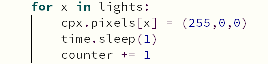
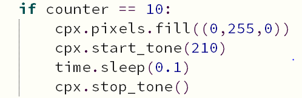

Timer
- Since we want the timer to keep on running, I used a while loop. Type in
Writing the above the line keeps on running the loop untill it's False. (which it'll never be)while True: - Create a variable named x and set it equal to 0
- Declare a list named lights with 0 to 9 as your elements. It should look
something like this
Each number represents a neopixellights = [0,1,2,3,4,5,6,7,8,9] - Create a for loop that goes through
lightsand makes the neopixel light up every second. Then add 1 to thecounterso that it keeps track of time. At the end it should look something like this
- Now, create an if statement that checks how many seconds have passed by
and lights up or plays a sound according to it. I made it so that it changes
colors every 10 seconds and plays a small sound. If you wish to do this then
check and see if the counter is equal to the amount of seconds you want. When
it reaches the respective time, use
cpx.pixels.fill((num,num,num))to change the color and to play a sound usecpx.start_tone(num). Usetime.sleep(num)to specify how many seconds you want to play the tone.After that usecpx.stop_tone()to stop the tone. After you do the following, it should look like the following image.
- Repeat as much as you want but be sure to add
counter = 0so that it reastarts the count. To see an example, click on the Final Product on the navigation bar.